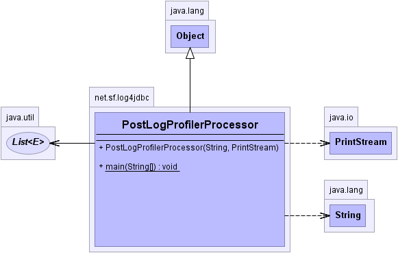

net.sf.log4jdbc
Class PostLogProfilerProcessor
java.lang.Object
 net.sf.log4jdbc.PostLogProfilerProcessor
net.sf.log4jdbc.PostLogProfilerProcessor
public class PostLogProfilerProcessor
- extends Object
Post processes an existing sqltiming log, and creates a profiling report from it.
Name of log file is passed in on the command line as the only argument.
Assumptions:
1. Each sql statement in the log is separated by a blank line.
2. Each sql statement is terminated with the timing string "{executed in N msec}" where N is the number of
milliseconds that the sql executed in.
-
- 
|
Method Summary |
static void |
main(String[] args)
Post Process log4jdbc sqltiming log data. |
| Methods inherited from class java.lang.Object |
clone, equals, finalize, getClass, hashCode, notify, notifyAll, toString, wait, wait, wait |
PostLogProfilerProcessor
public PostLogProfilerProcessor(String filename,
PrintStream out)
throws Exception
- Process given filename, and produce sql profiling report to given PrintStream.
- Throws:
Exception - if reading error occurs.- Parameters:
filename - sqltiming log to process.out - PrintStream to write profiling report to.
main
public static void main(String[] args)
throws Exception
- Post Process log4jdbc sqltiming log data.
- Throws:
Exception - if something goes wrong during processing.- Parameters:
args - command line arguments. Expects one argument, the name of the file to post process.